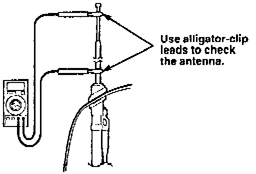
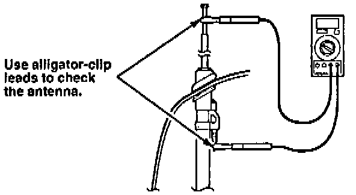
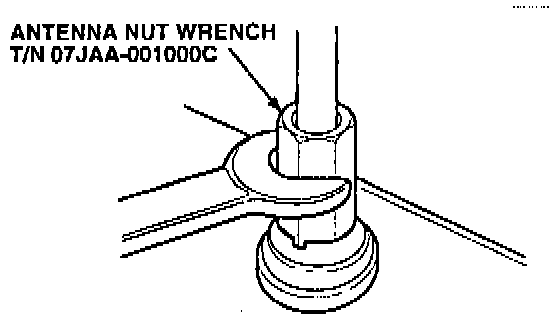
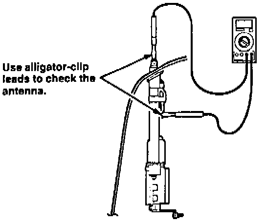

Diagnosis 1. Poor Reception
1. Turn the ignition switch ON; then turn the radio on to extend the antenna mast.
2. Measure the resistance between the top section and the bottom section of the antenna mast.
^ If the resistance is more than 10 ohms, go to CORRECTIVE ACTION, Antenna Mast Replacement.
^ If the resistance is less than 10 ohms, continue with step 3.
3. Disconnect the coaxial cable from the antenna.

4. Measure the resistance between the top section of the antenna and the center pin of the antenna male plug.
^ If the resistance is less than 10 ohms, go to Coaxial Cable Test.
^ If the resistance is more than 10 ohms, continue with step 5.

5. Remove the antenna mast nut with the special tool; then remove the antenna mast.

6. Measure the resistance between the center pin of the antenna male plug and the threaded portion of the antenna tube.
^ If the resistance is less than 10 ohms. go to CORRECTIVE ACTION, Antenna Mast Replacement.
^ If the resistance is more than 10 ohms, go to CORRECTIVE ACTION, Antenna Tube Replacement.